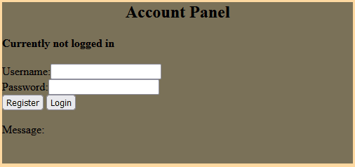
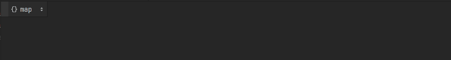
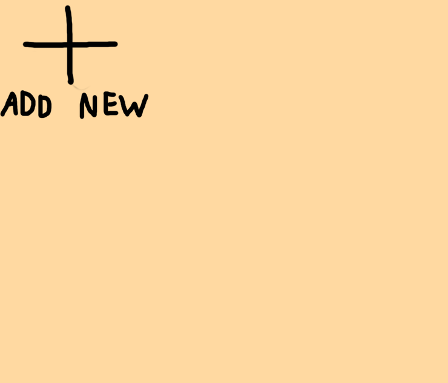

Character Customisation Website
Ik heb de taak gekregen om een website te maken waar gebruikers een account kunnen aanmaken, in kunnen loggen, en dan een karakter kunnen aanmaken om die aan te passen.
Het einddoel is om deze website een interface te laten zijn voor de in-game karakters.
Overzicht
Account aanmaking

Dit menu laat je een account aanmaken
Mits je ingelogd bent, kan je een nieuw karakter aanmaken.
Het is jouw eigendom en alleen jij kunt het karakter bewerken.
Account database

Accounts worden opgeslagen in een MongoDB database.
De owned gedeelte is voor het in rekening houden welke van de karakters deze gebruiken heeft gecreëerd.
In plaats van het wachtwoord als cleartext op te slaan, gebruik ik de MD5 algoritme om de wachtwoorden aan de client-side te hashen, voordat ze gestuurd worden.
Dit voorkomt dat iemand behalve de gebruiken zelf de originele wachtwoord uit kan vinden.
Karakter bewerking

Dit is de karakter-bewerking paneel zelf.
Je kan:
- de naam van het karakter instellen
- aanpassen of hij zijn broek & zijn borst-plaat draagt
- de kleur van zijn broek, borst-plaat, en zijn huid veranderen
Nadat je je aanpassingen hebt gemaakt, kan je die naar de server sturen door op 'Update' te drukken.
Dit eist dat je in ge-logged bent op de account die bezitting heeft over het karakter
Wanneer je je aanpassingen hebt ge-update, wordt de pagina van alle verbonden gebruikers gedwongen ge-refreshed- dit zorgt voor een re-connect, en de re-connect verzoekt een her-sturing
val alle karakter informatie, wat het karakter update voor de andere gebruikers
Het getal rechtsboven is het karakters zijn index, dit is het ding wat gebruikt wordt om rekening te houden met eigenaarschap